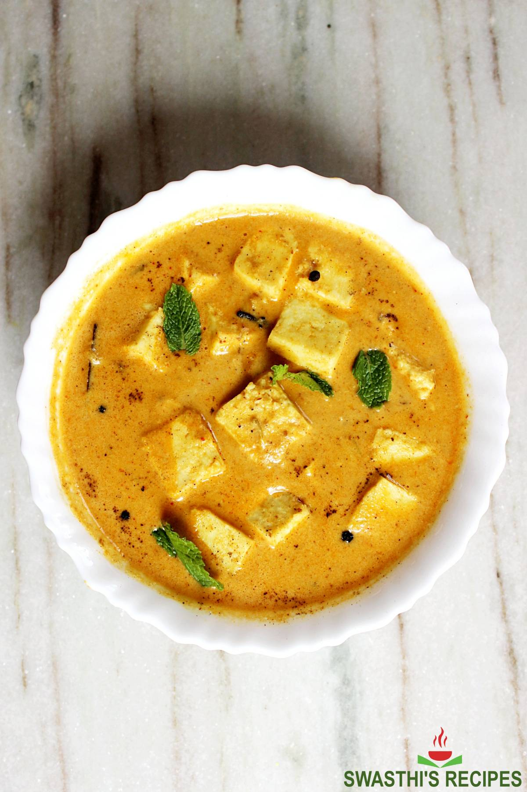

Shahi Paneer

Description
Shahi paneer is a preparation of paneer, native to the Indian subcontinent,
consisting of a thick gravy of cream, tomatoes and Indian spices.
Ingredients
- 1 tbsp ghee
- 1 tsp cumin seeds
- 1 inch cinnamon
- 2 cloves
- 2 green cardamom
- 1 black cardamom
- 1 bay leaf
- 2 green chili
- 1 inch ginger, cut into cubes
- 3-4 garlic, roughly chopped
- 2 medium onion, cut into quarter
- 10-12 cashew nuts, soaked
- 4 medium tomato, cut into quarter
- Salt to taste
- ¼ tsp turmeric
- 2 tbsp butter
- 1 tbsp kashmiri red chili powder
- 1 tsp coriander powder
- Prepared Puree
- 250 gms paneer, cubed
- ¼ cup cream
- 1 tsp kasoori methi, crushed
Steps
- Heat ghee in kadhai and add all the spices, followed by green chillies, ginger and garlic. saute for a minute.
- Now add onion, cashew nuts and saute. Do not brown them and keep translucence.
- Add tomatoes, salt and turmeric; mix and saute for a minute. Now add ½ cup water; cover and cook on low flame for 12-15 minutes.
Stir it once again and allow it to cool.
- Now transfer this mixture into blender and blend until fine texture.
Now pass this curry from the strainer to get that smooth and silky texture.
- Now heat butter in a non stick pan and add kashmiri red chilli powder and coriander powder. Saute for a minute and add prepared curry. Stir gently for a while and add paneer cubes. Add cream and sprinkle kasoori methi powder all over.
Mix well and cook for another 2 minutes on low flame.